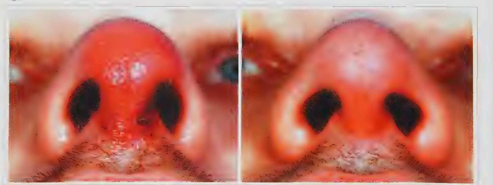
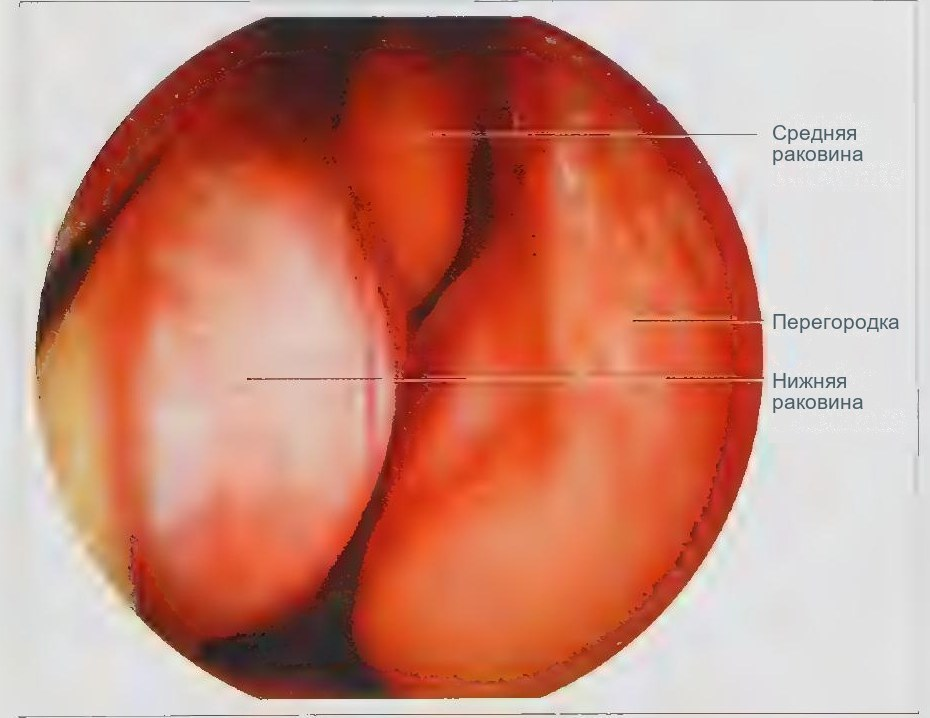
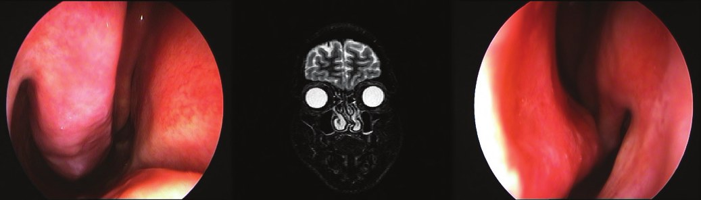

Заболевания полости носа
Пересказ по источнику: Бабияк В. И., Накатис Я. А., Говорун М. И. Оториноларингология. Руководство. Т. 1. — СПб.: Питер, 2009. — Гл. 5 «Заболевания носа» (фурункул носа, с. 126–128); гл. 6 «Заболевания внутреннего носа» (носовые кровотечения, с. 132–134; острые насморки, с. 140–142; хронические риниты, с. 151–172; вазомоторные риниты, с. 174–179); гл. 8 «Врождённые и приобретённые дефекты носа» (пороки развития перегородки носа, с. 245–247).
Фурункул носа
Фурункул носа представляет собой острое гнойно-некротическое воспаление волосяного фолликула и окружающей соединительной ткани, вызванное проникновением патогенных стафилококков извне. Факторами риска служат загрязнение кожи, микротравмы, расчёсы и нарушения секреции кожи, а множественному фурункулёзу способствуют сенсибилизация к стафилококку, авитаминоз, снижение иммунитета и сахарный диабет. На ограниченном участке входа в нос определяется конусовидный резко болезненный инфильтрат с гиперемированной кожей. Возможны абсцесс преддверия носа и абсцесс перегородки.
Карбункул протекает тяжелее: на багрово-синюшном инфильтрате видны несколько гнойно-некротических «головок», присоединяются регионарный лимфаденит, нарастающая пульсирующая боль, температура тела до 39–40 °С, лейкоцитоз и повышенная СОЭ. Опасность фурункула и карбункула преддверия носа, верхней губы и верхней половины лица состоит в том, что вены этой области через угловую вену лица сообщаются с венами оболочек мозга. Поэтому возможны гнойный лептоменингит и тромбоз кавернозного и других синусов. Признаками тромбофлебита кавернозного синуса служат экзофтальм на стороне поражения, хемоз, отёк верхнего века и паралич глазодвигательных нервов. К осложнениям относятся также лицевой лимфангоит и септикопиемия. Без внутричерепных осложнений прогноз благоприятный.

Острый катаральный ринит
Острый катаральный неспецифический насморк относится к самым частым заболеваниям в оториноларингологии, контагиозен и нередко принимает характер сезонной эпидемии. Чаще болеют ослабленные лица, реконвалесценты, работники химических и пылевых производств. Предрасполагают охлаждение, сырость и скученность. По мнению многих авторов, активизации сапрофитной флоры предшествует внедрение фильтрующегося аденовируса, ослабляющего иммунные барьеры. Снижается концентрация лизоцима в носовом секрете, нарушаются вазомоторные механизмы; обсуждается роль «холодовой аллергии», поскольку в отделяемом обнаруживали гистамин. Аналогичные изменения возникают и в пазухах, чаще в решётчатых ячейках, и стихают вместе с ринитом.
Выделяют три стадии. В первой возникают парез сосудов, гиперемия и отёк слизистой оболочки, а больных беспокоят сухость и зуд в носу, чихание, заложенность ушей, тубарные звуки при сморкании, гипосмия, слезотечение. Вторая стадия продолжается до 7 дней: обильное серозное, затем слизисто-гнойное отделяемое, отёк и сужение носовых ходов. Примесь крови может указывать на вирусную этиологию. В третьей стадии отделяемое густеет, и воспаление стихает. Общие проявления включают субфебрильную температуру, озноб, недомогание и головную боль.
Дифференциальный диагноз проводят с вазомоторным и аллергическим ринитом, начальным периодом синусита, гриппозным ринитом и насморком при общих инфекциях. Слизисто-гнойное отделяемое дольше двух недель при плохом самочувствии заставляет предположить синусит. Осложнениями служат носовые кровотечения, длительная гипосмия и аносмия, паросмия, синуситы, конъюнктивит, дакриоцистит, воспаление лимфоидной ткани глотки, а при эпидемиях трахеит и бронхит. Прогноз в целом благоприятный.
Хронический катаральный ринит
Источник классифицирует хронические риниты. Неспецифические включают катаральный, гипертрофические (ограниченный и диффузный), атрофические (простые и озену) и вазомоторные (аллергическую и нейровегетативную формы); специфические представлены туберкулёзом, волчанкой, сифилисом, проказой, саркоидозом и другими. Хронический катаральный ринит определяется как хроническое катаральное воспаление слизистой оболочки с обильным отделяемым и затруднением носового дыхания. Он чаще следует за повторными острыми ринитами. У взрослых хронизации способствуют профессиональные вредности, курение, алкоголь и анатомические причины локального дефицита кислорода: узкие ходы, девиация перегородки, латентные синуситы. Автор подчёркивает, что патогенез не сводится к местным процессам.
У детей ринит сопутствует аденоидиту и тонзиллиту: постоянное отделяемое мацерирует кожу верхней губы, затруднено дыхание, голос гнусавый. Длительное течение приводит к аденоидному типу лица, нарушению прикуса, отставанию в развитии и снижению слуха при катаральном сальпингоотите. Слизистая оболочка гиперемирована, отёчна, раковины увеличены.
У взрослых насморк усиливается зимой и стихает летом. Беспокоят затруднение дыхания, слизистое или слизисто-гнойное отделяемое, стекающее по задней стенке глотки, снижение обоняния, головная боль. Слизистая оболочка гиперемирована, часто с синюшным оттенком, отделяемое пересекает ходы тяжами; нижняя раковина увеличена из-за пареза венозных сплетений, вдавливается пуговчатым зондом, а смазывание адреналином быстро уменьшает её объём. Рентгенологически часто виден отёк слизистой оболочки пазух. Дифференцируют с гипертрофическим ринитом (раковины не сокращаются, зонд встречает плотную ткань), начальной озеной, аллергическим ринитом, латентным синуситом, инородным телом и ринолитом, третичным сифилисом и туберкулёзом носа. Осложнения возникают преимущественно на расстоянии: хронические воспаления гортани, трахеи, бронхов, тубоотит.
Хронический гипертрофический ринит
Хронический гипертрофический ринит определяется как хроническое воспаление с гипертрофией слизистой оболочки, межуточной ткани и желёз на фоне нарушений трофической функции вегетативной нервной системы. Считается поздней стадией катарального ринита, хотя такая эволюция необязательна. Чаще болеют мужчины зрелого возраста; роль играют очаги инфекции, производственные факторы, вредные привычки и аллергия.
При диффузной форме выделяют три фазы. Мягкая гипертрофия: гиперемия и отёк, раковины эластичны, сосудосуживающие средства действуют. Соединительнотканная гипертрофия: метаплазия эпителия, начальная дегенерация сосудистых мышц, слизистая оболочка бледная или голубоватая, действие сосудосуживающих средств ослабевает. Отёчная, или полипоидная, фаза: гиперколлагеноз и инфильтрация, поверхность раковин гладкая, бугристая или полипоподобная. Больные жалуются на постоянное отсутствие носового дыхания, сухость во рту, храп, снижение обоняния и памяти; речь с закрытой гнусавостью. В первой фазе риноскопическая картина может быть почти нормальной; позднее ходы обтурированы плотными раковинами, а задние концы нижних раковин свисают в носоглотку, образуя вместе с отёком края перегородки «крылышки». Осложнения включают тубоотит, синуситы, аденоидит, тонзиллит, трахеобронхит, дакриоцистит. Дифференцируют с деформациями перегородки, аденоидами, ангиофибромой носоглотки, атрезией хоан, полипозом, туберкулёзом, сифилисом, опухолями и ринолитом.
Ограниченная форма чаще поражает задние концы нижних раковин: выдох затруднён, поскольку они играют роль клапана на хоанах, больные постоянно «фыркают». Передняя риноскопия бывает нормальной, а при задней видны мясистые серовато-белесоватые образования, иногда напоминающие тутовую ягоду. Реже поражаются передние концы средних раковин (при одностороннем процессе чаще concha bullosa или латентный синусит) и слизистая оболочка перегородки. Атипичные кондиломоподобные формы дифференцируют с опухолью, туберкулёзом и сифилисом.
Атрофический ринит и озена
Простой атрофический ринит бывает первичным, с неясной этиологией, и вторичным, вызванным профессиональными вредностями и климатом; значение придают также инфекции верхних дыхательных путей, травмам и радикальным вмешательствам на носе. Часть авторов видит в нём локальное проявление системного дистрофического процесса. Исчезают реснички, эпителий метаплазируется, атрофируются железы и нервные окончания, в запущенных случаях кость. Больные жалуются на сухость, вязкое отделяемое, засыхающее в жёлто-серые корки, снижение обоняния. Слизистая оболочка бледная, сухая, сосуды просвечивают, раковины уменьшены, ходы настолько широки, что видна задняя стенка носоглотки. Разновидность, передний сухой ринит, проявляется сухостью и язвочками перегородки и может предшествовать её прободению.
Озена представляет собой хроническое заболевание с прогрессирующей атрофией слизистой оболочки и костей носа, вязким отделяемым, засыхающим в корки, и зловонным запахом, ощущаемым окружающими. Встречается редко, чаще у детей и женщин; к старости проявления стихают. Причины не выяснены: обсуждаются анатомическая (широкие ходы), инфекционная (клебсиелла озены), наследственная, нейроэндокринная и иммунная теории. Слизистая оболочка белесоватая, с лакированным блеском, покрыта грязно-серыми корками; пирамида носа недоразвита.
Различают три стадии. Начальная, обычно в 7–8 лет, проявляется вязким, затем гнойным отделяемым с запахом. Больной вначале ощущает запах, затем нет из-за аносмии. В стадии разгара присутствуют корки, сухость, носовые кровотечения, ощущение заложенности при широких ходах, боли в пирамиде носа, атрофия задней стенки глотки, гортани и трахеи; корки лежат преимущественно в среднем ходе, под ними слизистая оболочка бледная, не кровоточит, язв нет. Завершающая стадия, после 40 лет, характеризуется прекращением выделений и запаха при сохранении атрофии. Описаны односторонняя озена при искривлении перегородки, локализованная форма и озена без корок. Начальную стадию легко принять за хронический насморк; дифференцируют с гипертрофическим и гнойными ринитами, сифилисом, риносклеромой, синуситами, ринолитом и распадающимися опухолями. Осложнения включают озенозный фарингит и ларингит, синуситы, поражения глаз, евстахиит и средний отит, неврит слухового нерва, а вследствие проглатывания отделяемого хронический гастрит.
Вазомоторный ринит
В. И. Воячек называл вазомоторные риниты ложными: насморк возникает без выраженных признаков воспаления и чаще отражает общий вегетативный невроз. Источник считает деление на нейровегетативную и аллергическую формы условным. Нейровегетативная форма может развиваться при раздражении нервных окончаний нижних раковин контактным шипом перегородки; значение придаётся и изменениям шейного отдела позвоночника. Провоцируют её запылённость, агрессивные пары, курение и алкоголь.
Сезонность не характерна. Отмечаются перемежающаяся заложенность носа, водянистое отделяемое, на высоте приступа зуд, чихание и головная боль. Приступ начинается и проходит внезапно, до десяти раз в день; ночью заложенность постоянна. Заложена половина носа, на которой лежит больной, что указывает на слабость вазоконстрикторов. Нижние раковины увеличены, с «сизыми и белыми пятнами» (Воячек), мягкие, зонд легко погружается в них. Патогномоничным признаком служит резкое сокращение раковин при смазывании адреналином. Длительное течение ведёт к гипертрофическому риниту.
Аллергический ринит
Источник рассматривает аллергический ринит как аллергическую форму вазомоторного ринита и относит к реакциям I типа. Различают сезонный и постоянный (круглогодичный) ринит. Сезонный является синдромом поллиноза: приступ возникает остро в период цветения, с сильным зудом, многократным чиханием, обильным водянистым отделяемым, затруднением дыхания и конъюнктивитом, и длится 2–3 часа. В межприступный период слизистая оболочка не изменена, возможны деформация перегородки и шипы; в приступе она гиперемирована или синюшна, отёчна, раковины обтурируют ходы. Возможны кашель, астматический синдром и повышение температуры.
Постоянный аллергический ринит не имеет периодичности, приступы выражены умеренно. Описаны четыре стадии: транзиторные приступы, continua, полипообразование и карнификация. В первой реакция на сосудосуживающие средства сохранена. Во второй слизистая оболочка бледнеет, приобретает серый оттенок и зернистость, обоняние почти исчезает. Затем в среднем носовом ходе появляются полупрозрачные полипы, ткани раковин уплотняются, развиваются признаки гипертрофического ринита, учащаются приступы бронхиальной астмы. Двусторонний полипоз чаще свидетельствует о первично аллергическом процессе, односторонний о воспалении в решётчатом лабиринте или верхнечелюстной пазухе. Хоанальный полип (Киллиан), односторонний, исходит из верхнечелюстной пазухи, даёт клапанный механизм, закрытую гнусавость и дисфункцию слуховой трубы. Малигнизации полипов не бывает.

Искривление перегородки носа
Искривления перегородки имеются почти у всех здоровых людей; патологическими считают лишь нарушающие носовое дыхание и вызывающие заболевания носа, пазух и ушей. Формы разнообразны: утолщения, шипы и гребни, С- и S-образные, угловидные искривления. Они развиваются с 5–7 лет и до 20 лет. Причиной считают неравномерный рост хряща и костной «рамы», травму; для эссенциального искривления предлагались ринологическая, врождённая, биологическая, рахитическая и стоматологическая теории.
Основное проявление составляет нарушение носового дыхания и обоняния. На вогнутой стороне компенсаторно гипертрофирована раковина, а контактные шипы (spina irritativa) вызывают вазомоторные и трофические расстройства. Течение идёт по пути адаптации (смешанное дыхание) или дезадаптации. Осложнения включают хронизацию насморка, синуситы, дисфункцию слуховой трубы, средний отит, а из-за ротового дыхания фарингиты, тонзиллиты, ларингиты и трахеиты.

Носовые кровотечения
Носовые кровотечения часто связаны с сосудистыми нарушениями; источник называет их одним из самых частых (95 %) осложнений сосудистой патологии носа. Различают кровотечения местного, общего и травматического происхождения.
Местные кровотечения чаще исходят из сплетения Киссельбаха в переднем отделе перегородки, образованного ветвями клиновидно-нёбной, носонёбной и нёбной восходящей артерий; здесь слизистая оболочка тонкая, а стволы анастомозируют. Способствуют микротравмы, атрофия слизистой оболочки, физическое напряжение и перегревание. Повторные кровотечения ведут к ползучей язве перегородки; иногда в передних отделах образуется кровоточащий полип. Дифференцируют с опухолями и ангиофибромой носоглотки.
Общие причины: чаще всего (50 %) гипертензионный синдром, а также вегетативная дисфункция, болезни крови и печени, цинга, болезнь Ослера. Травматические кровотечения сопутствуют травмам носа в 90 % случаев; при переломах основания черепа они могут сочетаться с носовой ликвореей.


Раздел «Учебник» — справочная теория, не клинические рекомендации. Тактика ведения пациента — по разборам КР.